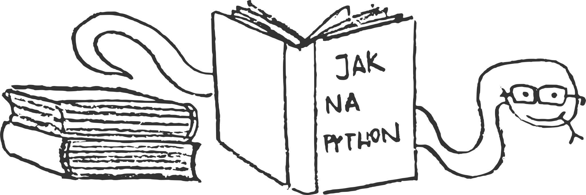

Učíme se Python#
Česká komunita je přátelská a živá. Vždy bude po ruce někdo, kdo ti pomůže. Nebudeš mít problém sehnat práci. Pythonistů je nedostatek! I kdyby weby vyšly z módy, Python nachází uplatnění v desítkách dalších oborů.

Online materiály – neumím vůbec programovat#
Následující materiály vznikly v rámci aktivit, které se snaží přiblížit IT ženám a ženy k IT. Jsou skvěle zpracované a může se z nich naučit programovat od úplných základů kdokoliv.
Online materiály – programovat trochu umím#
Přecházím z jiného jazyka#
- Naučte se Python za X minut
- Jak přejít z PHP (2. díl)
- Úvod do Pythonu pro programátory
- Tahák na podobné konstrukce v PHP, Perlu, Pythonu a Ruby
- Pragmatické tipy na to jak začít a co použít
- Průvodce Python ekosystémem
- Oficiální návod k Pythonu
- Rychlokurz Pythonu pro programátory
Návody pro začátečníky#
- Kniha Ponořme se do Pythonu 3 (PDF)
- Učíme se programovat v jazyce Python 3
- Základy Pythonu 3, interaktivní materiály
- Seznam nejlepších materiálů
- Sada krátkých videí jako úvod do Pythonu
- Sada screencastů k vylepšení dovedností s Pythonem
- Screencasty pro webový framework Django
- Dokumentace k webovému frameworku Django
- Základní algoritmy - v Pythonu a interaktivně
- Vysvětlení nejčastějších chyb začátečníků
- Různé úvodní lekce od Microsoft Virtual Academy
- Odkazy na vysvětlení zajímavých či pokročilých detailů jazyka
- Syntaxi už umím, co dál?
- Learn Python The Hard Way
Chci si to hned zkusit#
- Python na Umíme programovat
- Python konzole v prohlížeči
- Programovací hra
- Python na Codecademy, interaktivní online kurz
- Python na Code School, interaktivní online kurz
- Programming for Everybody, interaktivní online kurz
- Interaktivní vysvětlení toho, co se děje v kódu
- Codewars
Knihy#
Díky naší knihovničce si můžeš zadarmo půjčit knihy o Pythonu. Na stránkách Python Books navíc najdeš seznam knih, které si můžeš zdarma číst online nebo si je rovnou stáhnout. Určitě to omrkni!
Přednášky#
Nahráváme přednášky ze srazů a dáváme je na YouTube. Na stránkách pyvideo.org najdeš přednášky z celého světa.
Konvence pro psaní kódu#
Kam nahrát web napsaný v Pythonu?#
Kurzy#
Pro dámy#
- Pravidelné srazy PyLadies
- Jednorázové workshopy Django Girls
- Workshopy Czechitas (v Pythonu jen některé)
- Workshopy Geek Girls Carrots v Ostravě (v Pythonu jen některé)
Pro studenty#
- Kurz ČVUT FEL A4B99RPH
- Kurzy MU Brno
- Kurz ZČU v Plzni KKY/ITE
- Kurz ZČU v Plzni KKY/APK
- Kurz FIT ČVUT v Praze (BI-PYT)
Pro mládež#
- Kroužek na Praze 10
- Kroužek v Lázně Toušeň
- Czechitas - kroužky a tábory pro různé věkové kategorie
- Kroužky, workshopy a tábory makeITtoday
- Kurzy v Praze pro děti 8-12 let
- Kurzy v Praze a online od 11-19 let
Ostatní#
- Nepravidelné intenzivní Python kurzy kiwi.com
- Celodenní workshopy a setkání pro Python začátečníky
- Sedlákovi - různé kurzy související s Pythonem
- Engeto - Python akademie v Praze a Brně
Koučování#
Aneb osobní konzultace, mentoring, doučování...
- Učíme Python: Facebook skupina, Google Groups